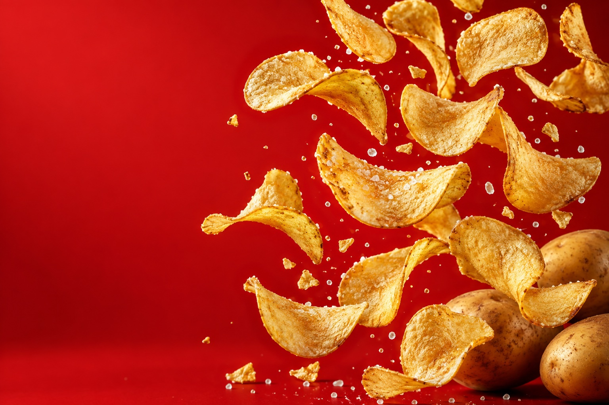

01THE BEGINNING
It starts with potatoes
Before there are chips, there are potatoes. They arrive at the factory ready to be washed and sorted.
02GETTING READY
Wash and slice
The potatoes are cleaned and peeled. Then they are cut into thin slices so they can cook evenly.
03TURN UP THE HEAT
Time to get crispy
The slices are fried until they turn golden and crunchy. Now they are starting to look like the snack we know.
04THE FINISHING TOUCH
Add some flavour
The chips are mixed with seasoning. This gives each bite its flavour.
05READY TO ENJOY
Ready for snack time
The chips are packed into bags. Their journey through the factory is finished, and they are ready to enjoy.
That’s the story behind the crunch!